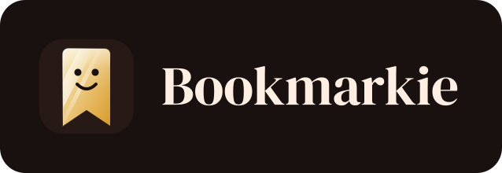
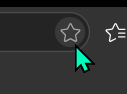
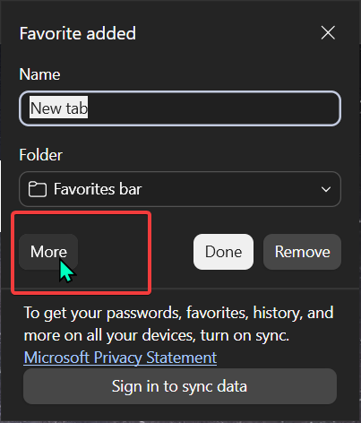
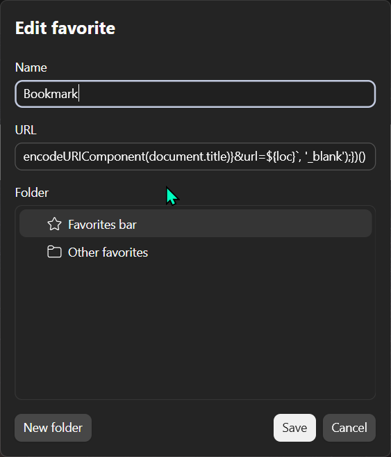
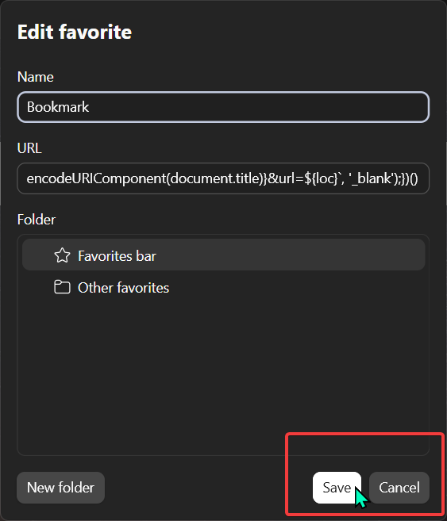

First of all, navigate to your browser and find a star icon (close to top right) like in the screenshot:

Next click on it to open the bookmark manager, and press "More":

Now name it "Bookmark" and paste the following code into the URL field:
javascript:(() => {console.log("Bookmarklet running."); let loc = encodeURIComponent(window.location.href); window.open(`https://bookmarkie.pro/bookmark?title=${encodeURIComponent(document.title)}&url=${loc}`, '_blank');})()

Finally, click "Save" to create the bookmark

To bookmark a page now, simply click the bookmark you just created.